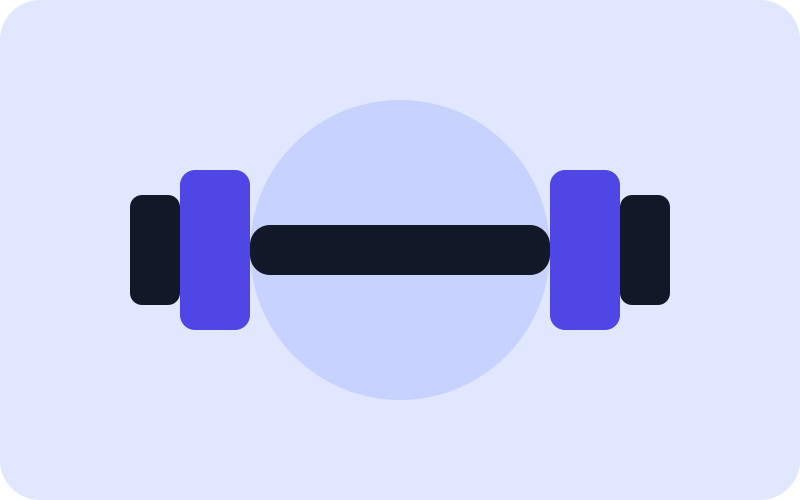

Dřepy
Dřepy posilují hlavně nohy a střed těla. Začněte s vlastní vahou a soustřeďte se na správnou techniku.
Jednoduše a bez zbytečných komplikací
Začít s posilováním nemusí být složité. Stačí znát základní cviky, správnou techniku a mít jednoduchý tréninkový plán.
Jak začít
Pokud jste začátečník, není potřeba trávit v posilovně každý den. Pro začátek stačí trénovat přibližně třikrát týdně a soustředit se hlavně na správné provedení cviků.
Důležitá je pravidelnost, dostatek odpočinku a postupné zvyšování zátěže. Není potřeba hned používat těžké váhy.
Dřepy posilují hlavně nohy a střed těla. Začněte s vlastní vahou a soustřeďte se na správnou techniku.
Kliky procvičují hrudník, ramena a tricepsy. Pokud jsou klasické kliky příliš těžké, můžete začít s kliky o lavičku.
Přítahy posilují záda a paže. V posilovně můžete použít kladku, jednoruční činku nebo vhodný stroj.
Pro začátek můžete cvičit celé tělo během jednoho tréninku. Mezi tréninky si nechte alespoň jeden den na odpočinek.
Nejdůležitější je správná technika. Pokud si nejste provedením cviku jistí, použijte menší váhu a postupujte pomalu.